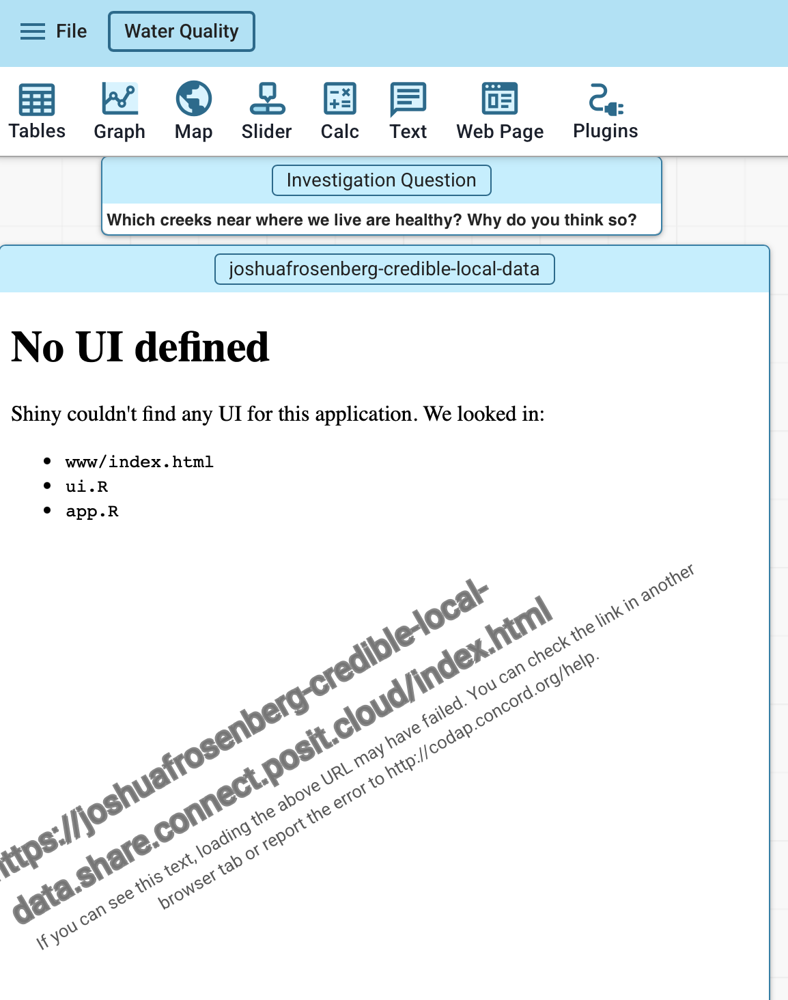

Practice-based Educational Data Science: A Proposal for Our Emerging Field
A keynote presentation at the Stanford Education Data Science conference
2001-05-27
Introduction
The Problem
What is our field? This is meant to be a window and mirrow to the field - less about a study, more about the field.
I have a friend, and maybe you have a friend like this (or this person is you!) who is always interrogating and critiquing the subtle framing of research. If I say, for example, my goal is to improve educational outcomes, they will ask, of course, which outcomes? A totally reasonable question. But then they will also ask, what do you mean by improve? And, even, what do you mean by your goal? And, of course, it would often come back to discussions of worldviews - underlying, connected systems of thought that we use to make sense of the world. Often these are tacit.
They’re very philosophical, and it’s - honestly - a bit annoying, but also clarifying and helpful (when I am willing to engage).
This talk is meant (or should I say, I mean for this talk!) to get a bit at something related - what are the underlying goals of what we call educational data science? And, what worldviews underly and support (or undercut) these goals?
Preopositions
Though I’m not usually that person, I do have a bit of a history with this issue/question
Data science in and for education
A proposition
But maybe that wasn’t quite it — it wasn’t so much about method and pedagogy as about vs. for education
So the argument is: Is EDS a methodological program that takes education as a use case, or is it work that is situated in educational contexts and accountable to its educational impacts?
This talk argues the choice is impo and timely.
Turn and talk
What brought you to EDS?
My background
I’ll share very briefly where I am coming from. I was a science teacher, and I intended for that to be my career. I am still deeply tied to K-12 education and K-12 science education. I am PI for an NSF CAREER project that - broadly - supports science teachers to take up and to teach about data science ideas. My wife is a librarian working at a public school and so I engage, well, deeply through her and that work.
I came to data science through science education. I think of the spark being seeing students changing the colors of graphs they made in Excel, and seeing them relate to their product — a small but meaningful relationship to data; claiming a relationship.
Another was seeing a colleague create an oft- (and I think correctly) bemoaned data visualization of text data, a word cloud. But they were so proud they created - coded - it.
Still another was laying in bed in graduate school looking at R code I wrote, that worked. It was eye opening; I wasn’t trained as a programmer, but I became, over time, interested, and then a bit obsessed, for years reading every book I could find (I think literally) on R, statistics using R.
CREDIBLE
STICKER


The Problems
The field is still niche

alt
There are a lot of unmet data needs
There isn’t a shortage of data related needs and challenges.
There is still a lot of Excel.
Pedagogical
Parents
Teachers
Adminn
My survey findings.
Extant solutions are complex and hard to use
dashboards
BB quote
Other fields have fundamental challenges (and strengths)
- Siemens and Baker (2012, *LAK 2*):
"In education, the emergence of 'big data' through new extensive educational media, combined with advances in computation holds promise for improving learning processes in formal education, and beyond as well.
Increasingly, very large data sets are available from students’ interactions with educational software and online learning - among other sources - with public data repositories supporting researchers in obtaining this data.
Two distinct research communities, Educational Data Mining (EDM) and Learning Analytics and Knowledge (LAK), have developed in response."
- Baker and Yacef (2009, *JEDM*):
"In recent years, advances in computing and information technologies have radically expanded the data available to researchers and professionals in a wide variety of domains, from government and biotechnology, to business logistics and professional sports.
Likewise, recent increases in instrumented educational software, online courses, as well as databases of student test scores, have created large repositories of educational data. The Educational Data Mining community seeks to use these data repositories to better understand learners and learning, and to develop computational approaches that combine data and theory to transform practice to benefit learners."
- Long et al. (2011, *LAK 1*):
"The idea for establishing a special dedicated forum to researching learning analytics was motivated by several important indicators:
1. The growth of data surpasses the ability of organizations to make sense of it. This concern is particularly pronounced in relation to knowledge, teaching, and learning.
2. Learning institutions and corporations make little use of the data learners "throw off" in the process of accessing learning materials, interacting with educators and peers, and creating new content.
3. In an age where educational institutions are under growing pressure to reduce costs and increase efficiency, analytics promises to be an important lens through which to view and plan for change at course and institutions levels."Funding is tight
Show NSF graphs, stories
Education is the focus of public attention and scrutiny
Show ed tech backlash stories, declining enrollment
Impact (finally?) matters
Consequence, impact, partnerships
Not one-off engagement
Sharing in closed ways
Actually, other fields better here
Edu not great (TCR)
Public goods
Commercial tools predominate
XX
Other fields think they have it covered
IGSDSP
Oh, yeah, AI
It’s a thing
Capacities
- Judgment about when to commit — developed by being close enough to practice that practice tells you
- Relationships and sustained proximity — the precondition for the other two, not a peer of them
- Disciplinary humility — knowing what to borrow and what to leave, which requires understanding both sides
Avenues
Things the field can do
Right-sized problems
Iterate, make better
Teacher education
- Teacher preparation: K-12 data science rollout is happening at scale, tens of thousands of teachers need curricula and PD, and the field has produced relatively little for them. Cite the numbers.
Cleveland mentioned!
Teacher support
Yeah
Local evidence use
AskAboutEdu
Quick insights
Transcripts of school boards
Large scale policy analyses
Non tech centric uses of data
Quant and qual
Modernizing quant methods
Lots of work to do here
Ed admin and leaders prep
Data literacy
Public goods and tools
- Tools and partnerships for practitioners: administrators, principals, and policymakers sitting on data they cannot use, with massive unmet demand and almost no supply from the field. Cite the numbers.
Turn and talk
What are important avenues for us?
# A few words on AI (that haven’t been said already)
It can remove or engage us with practice
More “AI as a normal technology”, perhaps a more impactful one than many we have recently seen, perhaps with spikey and hard-to-anticipate impacts — but not fundamentally different
Repeatedly struck by how not different AI coding is
- Understand context and problem
- Iterate (and iterate)
- Check
- Get feedback
- Know the right direction to goA vision
We have a choice. Back to the initial framing - in or for?
Closing
At the end state what the field could look like in 5 and 10 years and what we need